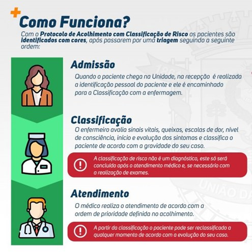

Acolhimento e redes de apoio e proteção à população cigana
Ao final desta aula, você será capaz de:
- Conhecer o conceito de acolhimento na saúde, as normas do SUS e as redes de apoio e proteção da população cigana.
O acolhimento é um princípio da Política Nacional de Humanização (PNH), que não está limitado a um lugar ou horário específico, nem a um profissional designado: ele está presente em todos os encontros no serviço de saúde.
Acolher é uma atitude ética que envolve ouvir as preocupações do usuário, reconhecer seu papel central no processo de saúde e doença, e assumir responsabilidade pela resolução, utilizando redes de compartilhamento de conhecimento. Representa um compromisso de atender às necessidades dos cidadãos que buscam os serviços de saúde.
O conceito de humanização tem sido entendido como uma nova forma de abordagem cultural no setor da saúde, que prioriza a qualidade do cuidado tanto do ponto de vista técnico como no reconhecimento dos direitos dos pacientes, respeitando a sua individualidade, subjetividade e valores culturais. Assim, humanizar o atendimento significa rejeitar a violência da desconsideração do outro, integrando as tecnologias ao relacionamento, com o elemento humano sendo crucial para a eficácia dos dispositivos organizacionais em saúde.
Nas dimensões do acolhimento, podemos destacar:
Abordagem relacional, ocorrendo mediação entre a rede de atenção à saúde e os usuários, articulando diferentes espaços de cuidado e ampliando a possibilidade de trânsito pela rede.
Fortalece o vínculo entre os profissionais e os usuários, através da escuta qualificada para atender a demanda individual de cada usuário.
Busca garantir uma participação cidadã junto ao sistema público de saúde, respondendo a demanda com resolubilidade.
Fonte: Rede HumanizaSUS.
Essa atitude implica, por sua vez, estar em relação com algo ou alguém. É exatamente nesse sentido de “estar com” ou “estar perto de” que queremos afirmar o acolhimento como uma das diretrizes de maior relevância ética, estética e política da Política Nacional de Humanização do SUS:
O acolhimento, visto como um princípio fundamental na saúde coletiva, deve iniciar na recepção do serviço e acompanhar todo o processo de tratamento, abrangendo a interação entre os profissionais e os usuários. Dessa forma, o acolhimento manifesta-se por meio da responsabilização, com intervenções eficazes e um atendimento humanizado, utilizando uma escuta atenta para abordar as questões de saúde mental dos usuários.
Humanizar a atenção à saúde significa compreender cada pessoa em sua singularidade, respeitando suas necessidades específicas, considerando seus valores e vivências como únicos, e evitando qualquer forma de discriminação negativa ou perda de autonomia, preservando a dignidade do ser humano.
2.3.1 - Acolhimento e classificação de risco.
Segundo a BVSMS (Biblioteca Virtual em Saúde do Ministério da Saúde), a classificação de risco é uma estratégia da Política Nacional de Humanização (PNH), uma ferramenta utilizada para gerenciar a espera no serviço de saúde, garantindo que os usuários mais necessitados sejam atendidos com prioridade, e não necessariamente por ordem de chegada.
Mas como funciona o Protocolo de Acolhimento com Classificação de Risco?
Os pacientes são identificados por cores, após passarem por uma triagem seguindo a seguinte ordem:

Os usuários que apresentam sinais mais graves, têm maior probabilidade de piorar em seu estado clínico, experienciam maior sofrimento, são mais vulneráveis e encontram-se em maior fragilidade.
O Ministério da Saúde lançou, em 2024, uma nota técnica com orientações de atendimento a migrantes, refugiados e apátridas. Trata-se de um material inédito e voltado a gestores e profissionais de saúde, cujas principais orientações são:
- Realizar o cadastro no e-SUS APS ou em sistema próprio, o acolhimento e o atendimento independente da documentação que a pessoa possuir;
- No caso da ausência de comprovante de residência, os dados de endereço do estabelecimento de saúde podem ser utilizados;
- Disponibilizar material multilíngue com orientações sobre os horários de funcionamento, os atendimentos e os procedimentos ofertados na unidade, publicizando o calendário vacinal, locais e horários de dispensação de medicamentos, etc;
- Realizar a estratificação de risco e vulnerabilidade, identificando possíveis descontinuações de tratamentos de condições crônicas de saúde;
- Compreender as especificidades culturais, de crenças e religiosidades, hábitos alimentares e nutricionais, além de aspectos da linguagem e comunicação das pessoas migrantes, refugiadas e apátridas atendidas;
- Na identificação, atentar para possíveis sinais de violência, situação de tráfico de pessoas, de trabalho análogo à escravidão ou de violação de direito, buscando auxílio dos órgãos competentes. Tendo em vista a vulnerabilidade dos casos, é importante o respeito ao sigilo, à integridade física da pessoa e ao atendimento culturalmente sensível;
- Observar se há demandas relacionadas à saúde mental, e se necessário, articular o cuidado compartilhado com a equipe Multiprofissional (eMulti) ou encaminhar ao Centro de Atenção Psicossocial (Caps).
2.3.2 - SUS e funcionalidades
A “Carta dos Direitos dos Usuários da Saúde” foi aprovada pelo Conselho Nacional de Saúde (CNS) no dia 17 de junho de 2009 e contém informações para que você conheça seus direitos na hora de procurar atendimento de saúde. Ela reúne os seis princípios básicos de cidadania que asseguram ao brasileiro o ingresso digno nos sistemas de saúde, seja ele público ou privado. São eles:
Vamos conhecer cada um dos seis princípios básicos a seguir:
- Todo cidadão tem direito ao acesso ordenado e organizado aos sistemas de saúde.
- Todo cidadão tem direito a tratamento adequado e efetivo para seu problema.
- Todo cidadão tem direito ao atendimento humanizado, acolhedor e livre de qualquer discriminação.
- Todo cidadão tem direito a atendimento que respeite a sua pessoa, seus valores e seus direitos.
- Todo cidadão também tem responsabilidades para que seu tratamento aconteça da forma adequada.
- Todo cidadão tem direito ao comprometimento dos gestores da saúde para que os princípios anteriores sejam cumpridos.
Agora que você já conhece os seis princípios básicos, assista ao vídeo explicativo referente a Cartilha dos direitos dos usuários do SUS.
2.3.3 - Nomadismo e redes de apoio
Apesar de tradicionalmente nômade, observa-se uma tendência crescente à sedentarização, seja por decisão própria ou por imposição. Esse fenómeno tem provocado conflitos frequentes relacionados com disputas territoriais, sobretudo nas zonas periféricas dos centros urbanos, onde o estilo de vida itinerante ou a prática da mendicância se mostram mais viáveis.
A exclusão social vivida por essa etnia ao longo dos anos, tanto no Brasil quanto em outras partes do mundo, é frequentemente considerada um elemento central da identidade cultural cigana. Nesse contexto, pode-se afirmar que a principal causa dessa exclusão foi a rejeição sistemática às normas e às dinâmicas impostas pelo mercado capitalista.
Ao considerar os diferentes significados que o processo de territorialização da saúde pode assumir—como a delimitação de um espaço geográfico para a atuação dos serviços, o reconhecimento do ambiente, da população, da dinâmica social e o estabelecimento de relações horizontais com outros serviços e instituições—é possível aprofundar a discussão sobre o território dos povos ciganos e sua inserção nos serviços de saúde no Brasil.
Falhas na interconexão entre as instâncias na construção de um território representam desafios significativos no processo de desenvolvimento da saúde, pois dificultam o entendimento, pelos Sistemas de Saúde, da transição de um território físico-geográfico para um território vivo.
Nesse contexto, é importante estabelecer uma definição clara do território cigano. Por não possuírem limites geográficos definidos previamente, os ciganos enfrentam maiores desafios na implementação das ações do SUS, que dependem de territórios bem delimitados. Como grande parte da população cigana é nômade, a ligação com o território físico onde se encontram tende a ser frágil.